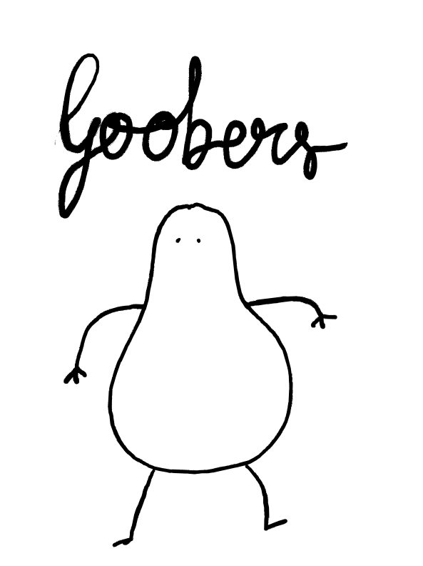

In case you didn't know, manga is similar to comic books, but Japanese and thus so much cooler. It also is a little different (from the art style to the way that the story is told) which I really enjoy.
I love certain manga with a passion, and so I wanted to make my own!
Here are a couple of my creations by their order of completeness.
I will have links for the PDF (to view in your browser) and .mobi files for if you have a kindle (so forward thinking of me, right?). If you have another e-reader, you're gonna have to convert to .epub or whatever you use on your own.
At the moment, I've just had one idea, and it came to me while I was sitting with Enzo in class and doing a little doodle
I'm calling it Goobers because all the characters will be shaped like little goober guys.
I've just got a couple pages and the art/lettering is rough (it will probably stay that way, it's gonna be all doodles). If you are interested, let me know and I will continue the work.

Link to download .mobi fileJK, i don't have anything here yet. But when I do, I'll be sure to let you know.